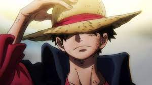

O começo
Luffy é neto de Monkey D. Garp, Vice-Almirante da Marinha e arqui-inimigo de Gol D. Roger, que fez história no mundo como o Rei dos Piratas e o dono original do tesouro One Piece. Ainda assim, desde jovem Luffy quis seguir os passos dos piratas que admirava, como Shanks e o próprio Roger. Ainda criança, ingeriu acidentalmente a Gomu Gomu no Mi, fruta que lhe proporcionou poderes de borracha, habilidades que ele desenvolve consideravelmente no decorrer do anime, desenvolvendo diferentes golpes.
Já mais adulto, "Luffy do Chapéu de Palha", como ficou conhecido, fundou sua própria tripulação, os Piratas do Chapéu de Palha. Como capitão da equipe, Luffy percorre a Grand Line recrutando novos membros e enfrentando diferentes inimigos. Tudo isso em busca de alcançar seu sonho de se tornar o novo Rei dos Piratas e encontrar o tesouro One Piece. Neste caminho, o jovem pirata conquistou uma reputação mundial de ser quase insano por já ter atacado as três instalações governamentais mais importantes e escapado com vida.
Atualmente, Luffy faz parte do grupo conhecido como "Pior Geração", que reconhece os 12 piratas cujas ousadas ações contra o Governo Mundial lhe renderam uma recompensa acima de $100.000.000. A do Luffy é $3.000.000.000. Poderes Capacidades físicas sobre-humanas: além de velocidade, agilidade e reflexos aprimorados, Luffy tem uma força inacreditável, sendo capaz quebrar materiais resistentes como aço e concreto. Capacidade de cura: além da resistência que suas habilidades de borracha lhe proporcionam, Luffy pode se curar de intensos ataques. Haki: por ser capaz de usar as três formas de Haki (uma das poucas pessoas conhecidas com essa capacidade), Luffy pode aumentar seus poderes e habilidades e prever ataques. Akuma no Mi: no decorrer de sua trajetória e de seus treinamentos, Luffy desenvolveu diferentes técnicas unindo suas habilidades de luta com seus poderes de borracha, geralmente usando recursos como esticar partes de seu corpo para que possa atingir inimigos à distância ou com maior potência. 
Zoro
Primeiro pirata a ser recrutado por Luffy para os Chapéus de Palha - convite feito no episódio 2 e oficialmente aceito no 3 - Zoro também está entre os quatro integrantes mais poderosos do grupo, além de, assim como seu capitão, fazer parte da Pior Geração, com uma recompensa de $1.111.000.000. Enquanto Luffy sonha em se tornar o Rei dos Piratas, o sonho de Zoro é um dia ser o melhor espadachim do mundo. Embora tenha uma personalidade que misture uma seriedade quase constante com um humor desajeitado, Zoro conquistou os fãs do anime e acabou se tornando, por vezes, alívio cômico dos episódios, devido a sua completa falta de direção. Além disso, sua amizade com Luffy é icônica. O pirata, inclusive, aceitou o convite para integrar os Chapéus de Palha após o capitão salvar sua vida. É comumente visto com suas três espadas. Um dos mistérios em torno de Zoro surgiu após o salto temporal que ocorre depois da Saga Guerra de Marineford, quando o pirata apareceu com uma cicatriz que mantém seu olho esquerdo permanentemente fechado. A falta de explicações sobre o ferimento já provocou teorias diversas entre os fãs.